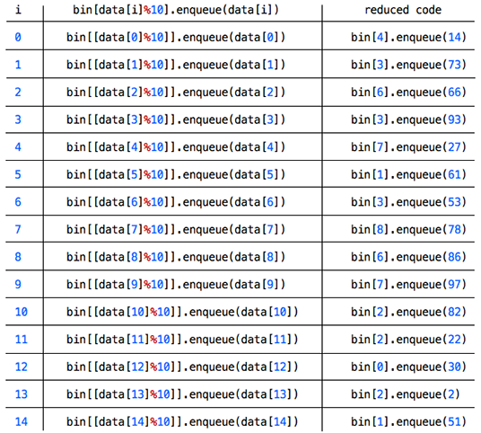

Section A2 - The First Enqueue Pass
Now everything we need is in place and ready execute. This is where things become interesting and may be difficult to understand to those fairly new to distribution type sorts. For that reason I will go through each line of code step by step, doing my best to explain exactly what is happening. It can get quite confusing in the mapping stages, so I will show a reduced version of code in the T-Charts provided.
With that said, let's move on to first of 2 blocks of code of the radix sort. In the code below is the first block of code which is broken down to 4 for loops, the last containing a nested while loop. This block of code implements the enqueue and dequeue operations for the first sweep and is basically the blueprint for the complete LSD Radix Sort code aside from some minor differences which we will soon see. The first sweep is based on the least significant digit - the one's digit. First take a look at lines 31 and 32 in the code below for a moment and try to visualize what is happening and after I will step through each loop of code to show in detail the enqueue, mapping and dequeue processes.
30 31 32 33 34 35 36 37 38 39 40 41 42 43
for(var i = 0; i < data.length; i++){
bin[data[i]%10].enqueue(data[i]);
};
for(var i = 0; i < bin.length; i++){
digIndex.push(bin[i].dataStore.length);
};
for(var i = 0; i < digIndex.length - 1; i++){
digIndex[i + 1] += digIndex[i];
};
for(var i = bin.length - 1; i >= 0; i--){
while(!bin[i].isEmpty()){
data[--digIndex[i]] = bin[i].dequeue();
}
};
In lines 30 - 32 of the code above, a for loop is initialized thats sets i = 0 and increments to 9. The first line in the loop is very important. This is where the mapping and enqueue process from the unsorted data array of integers based on the one's digit occurs. The algorithm is located on line 31. Lets assign var unsorted to an array of 15 unsorted integers, with values within the range of 0 - 99. This will be the data parameter passed into the radix function. We will go through each iteration below to see what is happening in lines 29 - 31 of the code. Listed in the table below are the 15 iterations (data.length = 15). I have included a reduced code in the 3rd column so it is clear which queue, noted by it's bin index value, the integers contained in the data array are being mapped and enqueued to.
It is important to note how the mapping is implemented. The %10 operand applied to each integer(data[i]) will result in a value from 0 to 9. So for example, in the first iteration, data[0]%10 = 14%10 = 4. This is the basis of enqueueing based on the one's digit. Also note that the integers will be sorted in place, that is the function will perform it's operations on the original input parameter being passed(data) and return the same data array with it's integer elements over-written and sorted. This eliminates the need to create a new array for storing and returning the sorted result. Below in Table 1 are the results for the 15 iterations in the enqueue process.The unsorted array is listed above the table for reference.
var unsorted = [ 14, 73, 66, 93, 27, 61, 53, 78, 86, 97, 82, 22, 30, 2, 51 ] = data
Table 1: T-chart which lists the result of 15 iterations in the for loop.
The reduced code
column shows clearly the mapping of each data value to queue location(bin index).
Lets look at the bin array now after the for loop operation. This is shown below. Notice the relationship between the bin index and the one's digit of the integers stored within that queues dataStore array. Also notice the order in which the integers were enqueued. It helps to clarify the process by looking at the original unsorted (data) array, the T-chart in Table 1 and the resultant dataStore arrays located in the queues(bin[0] - bin[9]) of the bin array below.
[ { dataStore: [30], // bin[0]
enqueue: [Function: enqueue],
dequeue: [Function: dequeue],
isEmpty: [Function: isEmpty] },
{ dataStore: [61, 51], // bin[1]
enqueue: [Function: enqueue],
dequeue: [Function: dequeue],
isEmpty: [Function: isEmpty] },
{ dataStore: [82, 22, 2], // bin[2]
enqueue: [Function: enqueue],
dequeue: [Function: dequeue],
isEmpty: [Function: isEmpty] },
{ dataStore: [73, 93, 53], // bin[3]
enqueue: [Function: enqueue],
dequeue: [Function: dequeue],
isEmpty: [Function: isEmpty] },
{ dataStore: [14], // bin[4]
enqueue: [Function: enqueue],
dequeue: [Function: dequeue],
isEmpty: [Function: isEmpty] },
{ dataStore: [], // bin[5]
enqueue: [Function: enqueue],
dequeue: [Function: dequeue],
isEmpty: [Function: isEmpty] },
{ dataStore: [66, 86], // bin[6]
enqueue: [Function: enqueue],
dequeue: [Function: dequeue],
isEmpty: [Function: isEmpty] },
{ dataStore: [27, 97], // bin[7]
enqueue: [Function: enqueue],
dequeue: [Function: dequeue],
isEmpty: [Function: isEmpty] },
{ dataStore: [78], // bin[8]
enqueue: [Function: enqueue],
dequeue: [Function: dequeue],
isEmpty: [Function: isEmpty] },
{ dataStore: [], // bin[9]
enqueue: [Function: enqueue],
dequeue: [Function: dequeue],
isEmpty: [Function: isEmpty] } ]
Our next step will be creating a mapping array from the digIndex array we initialized in the beginning of the radix funciton.